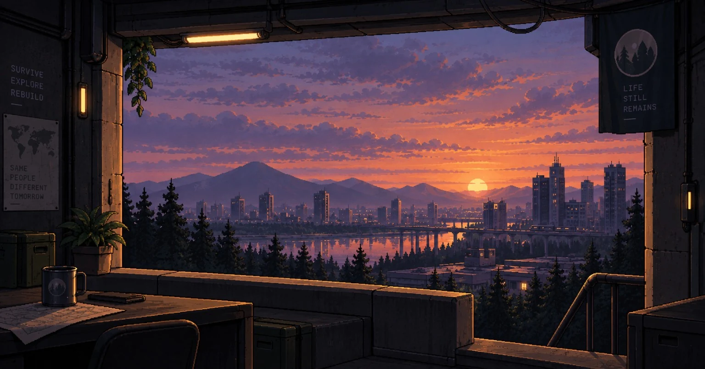

Echoes of Life
Survival. Exploration. Discovery.
Современный мир изменился, но не исчез. Исследуй города, находи убежища, собирай ресурсы и ищи ответы там, где прошлое оставило слишком много следов.
THE WORLD IS STILL THERE.
Это не история о мире, который полностью исчез. Это история о мире, который остался — но стал чужим.
Echoes of Life — survival-игра о выживании, исследовании и поиске ответов в изменившемся современном мире.
Города, дома, больницы, магазины и дороги всё ещё узнаваемы. Но за знакомыми стенами могут скрываться выжившие, заражённые зоны и следы событий, о которых лучше было не знать.

RECOVERED IMAGE / CITY SECTOREXPLORE THE PROJECT.
Открой отдельные разделы проекта. Каждая страница отвечает за свою часть мира.
WORLD
Места, зоны и следы прошлого.
02SYSTEMS
Основные механики выживания.
02WEAPONS
Оружейный архив: DEFAULT / CUSTOM.
—LOCATIONS
Города, здания и большие объекты.
???INFECTED
То, что осталось после заражения.
01JACKSON
Один человек. Слишком много вопросов.
—DEVLOG
Дневник разработки и изменения проекта.
—CONTACTS
Связь с проектом и разработчиками.
—LOGIN
Локальный профиль и сохранение настроек.